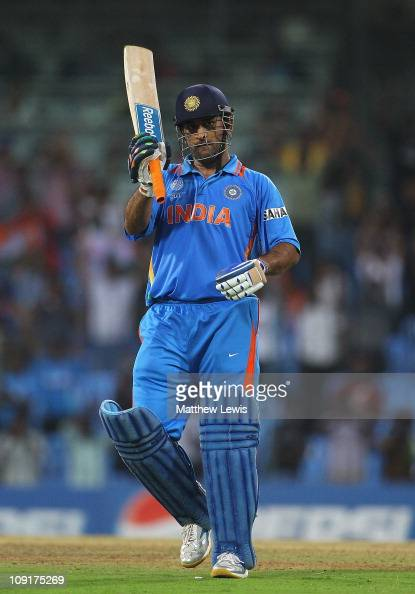

<!--Q2#: Create a web page with three personalities 
    and write basic information about them along their pictures.
     Create three web pages about these personalities. 
     The first page should show the name and picture of the celebrity. 
     Clicking on one of the pictures should take you to another web page that contains basic facts about the Celebrity. 
     On your second and third page make sure to match the bold and italic.-->
     <!DOCTYPE html>
     <html>
     <body>
     
     <h1>HTML Links</h1>
     
     <p>MS Dhoni</p>
     
     
     </body>
     </html>